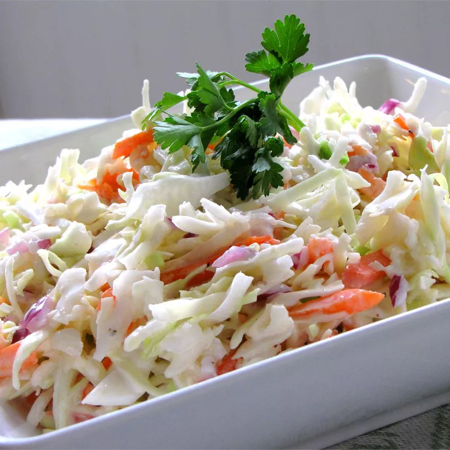

Coleslaw Recipe

Description
Lets learn how to make this summertime favorite side dish. It goes amazing with those BBQ dishes.
Ingredients
- ½ cup mayonnaise
- ⅓ cup white sugar
- ¼ cup milk
- ¼ cup buttermilk
- 1 (16 ounce) package coleslaw mix
- 1 ½ tablespoons white wine vinegar
- 2 tablespoons minced onion
Steps
- Stir mayonnaise, sugar, milk, buttermilk, lemon juice, vinegar, salt, and pepper together in a bowl until smooth.
- Combine coleslaw mix and onion in a large bowl. Pour mayonnaise mixture over top and stir until well combined. Chill for 1 hour before serving.